5530A14 alternator - r+r for versions with air conditioner
- Path
- Procedures > 55 ELECTRICAL EQUIPMENT > 5530 CURRENT GENERATOR > 5530A alternator and components > 5530A14 alternator - r+r for versions with air conditioner
- Kind
- repair procedure (removal / refitting; the operation number is the code)
- Applies to
- engines: 1.6 TS , 1.8 TS, 2.5 V6, 1.9 JTD 8v , 2.4 JTD 10v; all production periods
- Interactive page
- https://sloeber94.github.io/elrnDB-a156/en/#/3238423
Applies to: engines: 1.6 TS , 1.8 TS; all production periods
 Removing
Removing
 Refitting
RefittingDisconnect the battery negative terminal.
 | Name | Connector |
|---|---|---|
- | Battery |
Remove the auxiliary drivebelt.
Remove the first exhaust pipe section.
Place a hydraulic jack beneath the engine, then remove the central power unit mount.
1. Disconnect the electrical wiring from the alternator.
| Name | Connector |
|---|---|---|
1 | Alternator |
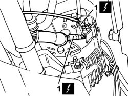
Applies to: engines: 1.6 TS , 1.8 TS; all production periods
1. Unscrew retaining bolts (1a) and remove alternator (1b) from the engine.
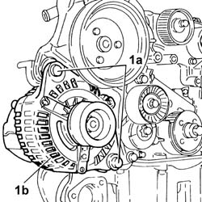
Applies to: engines: 1.6 TS , 1.8 TS; all production periods
Refitting
RemovingRefit the alternator and tighten the retaining bolts to torque.
Connect the alternator electrical wiring.
 | Fastening | Component | Ø | Value (daNm) |
|---|---|---|---|---|
- | Bolt | ALTERNATOR ASSEMBLY | M10 | 7.0 |
| Fastening | Component | Ø | Value (daNm) |
|---|---|---|---|---|
- | Bolt | ALTERNATOR ASSEMBLY | M12 | 9.0 |
| Name | Connector |
|---|---|---|
- | Alternator |
Refit the central power unit mount and tighten the retaining bolts to torque.
| Fastening | Component | Ø | Value (daNm) |
|---|---|---|---|---|
- | Bolt | ENGINE MOUNT TIMING SIDE | M10 | 4.9 |
| Fastening | Component | Ø | Value (daNm) |
|---|---|---|---|---|
- | Bolt | FRONT RUBBER MOUNTS | M12 | 8.8 |
Remove the hydraulic jack and refit the first exhaust pipe section. Tighten the retaining bolts to torque and connect the lambda probe electrical connection.
| Fastening | Component | Ø | Value (daNm) |
|---|---|---|---|---|
- | Bolt | EXHAUST PIPE TO ENGINE | M8 | 2.3 - 2.8 |
| Name | Connector |
|---|---|---|
- | Lambda sensor |
Refit the auxiliary drivebelt and adjust belt tension.
Connect the battery negative terminal.
| Name | Connector |
|---|---|---|
- | Battery |
Applies to: engines: 1.9 JTD 8v ; all production periods
Removing
RefittingPosition the vehicle on the lift.
Disconnect the battery negative (-) terminal.
| Name | Connector |
|---|---|---|
- | Battery |
1076B50 exhaust pipe attachment to engine - r + r
4450B10 Front WHEEL (one) - R.R.
7055B64 Engine compartment DUST shield in front wheel arch (one), left or right - R.R.
1092G10 single engine belt r r
1. Tighten the upper engine oil dipstick bolt.
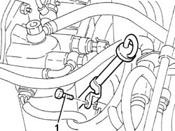
Applies to: engines: 1.9 JTD 8v ; all production periods
1. Disconnect the electrical connection from the fuel temperature sensor.
| Name | Connector |
|---|---|---|
1 | Fuel temperature sensor |
2. Disconnect the electrical connection from the fuel pressure regulator on the fuel pump.
| Name | Connector |
|---|---|---|
2 | Fuel pressure regulator |
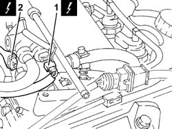
Applies to: engines: 1.9 JTD 8v ; all production periods
1. Disconnect the electrical connection from the fuel pressure sensor.
| Name | Connector |
|---|---|---|
1 | Fuel pressure sensor |
2. Disconnect the electrical connection from the excess pressure sensor.
| Name | Connector |
|---|---|---|
2 | Turbocharging sensor |
3. Disconnect the electrical connection from the E.G.R. valve.
| Name | Connector |
|---|---|---|
3 | EGR solenoid |
4. Disconnect the electrical connections from the pre-heating control unit.
| Name | Connector |
|---|---|---|
4 | Plug preheating control unit |
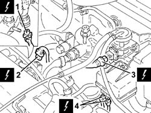
Applies to: engines: 1.9 JTD 8v ; all production periods
1. Disconnect the inlet pipe from the injectors from the fuel return manifold pipe/
2. Undo nuts (2a) and move fuel return manifold pipe (2b).
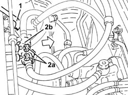
Applies to: engines: 1.9 JTD 8v ; all production periods
1. Undo nuts (1a) and move fuel filter assembly (1b).
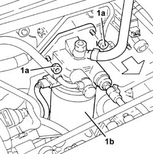
Applies to: engines: 1.9 JTD 8v ; all production periods
1. Disconnect the supply cable from the starter motor.
| Name | Connector |
|---|---|---|
1 | Starter' motor |
2. Disconnect the supply leads from the alternator.
| Name | Connector |
|---|---|---|
2 | Alternator |
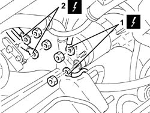
Applies to: engines: 1.9 JTD 8v ; all production periods
Raise the car.
1. Undo bolt (1a) and remove oil dipstick assembly (1b).
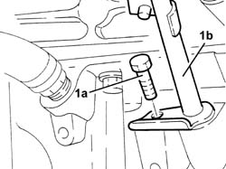
Applies to: engines: 1.9 JTD 8v ; all production periods
1. Remove the lower and upper alternator bolts.
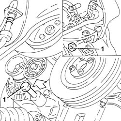
Applies to: engines: 1.9 JTD 8v ; all production periods
1. Undo bolts (1a) and remove rear alternator bracket (1b).
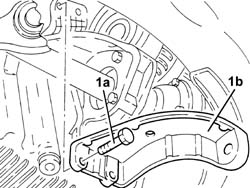
Applies to: engines: 1.9 JTD 8v ; all production periods
Lower the vehicle.
1. Remove the alternator.
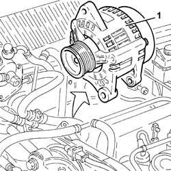
Applies to: engines: 1.9 JTD 8v ; all production periods
Refitting
RemovingRefit the alternator.
Raise the car.
Fit the rear alternator bracket and bolt to the crankcase.
1. Tighten the lower and upper alternator bolts to the specified torque.
| Fastening | Component | Ø | Value (daNm) |
|---|---|---|---|---|
1 | Bolt | ALTERNATOR ASSEMBLY | M10 | 4.3 - 5.3 |
| Fastening | Component | Ø | Value (daNm) |
|---|---|---|---|---|
1 | Bolt | ALTERNATOR ASSEMBLY | M12 | 6.0 - 7.4 |
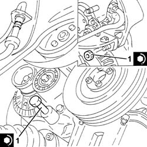
Applies to: engines: 1.9 JTD 8v ; all production periods
Refit the engine oil dipstick assembly and secure with the lower bolt.
Lower the vehicle.
Connect the supply leads to the alternator.
Connect the supply cable to the starter motor.
Place the fuel filter back in its housing and secure with the nuts.
Place the fuel return manifold pipe back in its housing and secure it using the bolts.
Connect the injector inlet pipe to the fuel return manifold pipe.
Connect the electrical connections to the pre-heating control unit.
Connect the electrical connection to the E.G.R. valve.
Connect the electrical connection to the excess pressure sensor.
Connect the electrical connection to the fuel pressure sensor.
Connect the electrical connection to the pressure regulator on the pressure pump.
Connect the electrical connection to the fuel temperature sensor.
Tighten the upper bolt securing the engine oil dipstick to the cylinder head.
1092G10 single engine belt r r
7055B64 Engine compartment DUST shield in front wheel arch (one), left or right - R.R.
4450B10 Front WHEEL (one) - R.R.
1076B50 exhaust pipe attachment to engine - r + r
Connect the negative (-) battery terminal.
Remove the vehicle from the ramp.
Applies to: engines: 2.4 JTD 10v; all production periods
Removing
RefittingPosition the vehicle on the lift.
Disconnect the battery negative (-) terminal.
| Name | Connector |
|---|---|---|
- | Battery |
1. Undo the upper engine oil dipstick tube bolt.
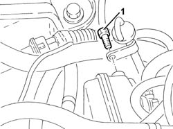
Applies to: engines: 2.4 JTD 10v; all production periods
1. Disconnect the electrical connection from the E.G.R. valve.
2. Disconnect the vacuum intake pipe from the EGR solenoid.
3. Disconnect the EGR valve pipe from the EGR solenoid.
4. Disconnect the electrical connections from the pre-heating control unit.
5. Unscrew bolts ( 5a) and remove bracket (5b) with EGR solenoid (5c) and glow plug preheating control unit (5d).
| Name | Connector |
|---|---|---|
5c | EGR solenoid |
| Name | Connector |
|---|---|---|
5d | Plug preheating control unit |
6. Unscrew nuts (6a) and take out fuel filter (6b) with pipes.
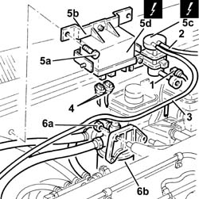
Applies to: engines: 2.4 JTD 10v; all production periods
Raise the car.
1. Unscrew the lower engine oil dipstick pipe bolt.
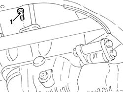
Applies to: engines: 2.4 JTD 10v; all production periods
4450B10 Front WHEEL (one) - R.R.
7055B64 Engine compartment DUST shield in front wheel arch (one), left or right - R.R.
1092G10 single engine belt r r
1. Undo the lower alternator fixing bolt.
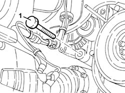
Applies to: engines: 2.4 JTD 10v; all production periods
1. Disconnect the electrical connections from the alternator.
Lower the vehicle.
Remove the engine oil dipstick.
2. Undo bolts (2a) and remove alternator bracket (2b).
3. Withdraw upper bolt screw (3a) and remove alternator (3b).
| Name | Connector |
|---|---|---|
3b | Alternator |
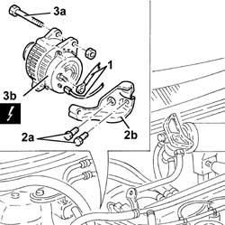
Applies to: engines: 2.4 JTD 10v; all production periods
Refitting
RemovingFit the alternator and secure it with the upper bolt.
| Name | Connector |
|---|---|---|
- | Alternator |
Fit the alternator mounting bracket and secure it with the bolts.
Fit the oil dipstick and secure it with the top bolt.
Raise the car.
Connect the electrical connections to the alternator.
Tighten the lower alternator fixing bolt.
1092G10 single engine belt r r
4450B10 Front WHEEL (one) - R.R.
7055B64 Engine compartment DUST shield in front wheel arch (one), left or right - R.R.
Tighten the lower bolt for the engine oil dipstick tube.
Lower the vehicle.
Place the fuel filter and pipes back in its housing and secure with nuts.
Fit the bracket together with the EGR solenoid and glow plug preheating control unit. Secure with bolts.
| Name | Connector |
|---|---|---|
- | EGR solenoid |
| Name | Connector |
|---|---|---|
- | Plug preheating control unit |
Connect the electrical connections to the pre-heating control unit.
Connect the EGR solenoid control pipe to the EGR solenoid.
Connect the vacuum intake pipe to the EGR solenoid.
Connect the electrical connection to the EGR solenoid.
Connect the negative (-) battery terminal.
| Name | Connector |
|---|---|---|
- | Battery |
Remove the vehicle from the ramp.
Applies to: engines: 2.5 V6; all production periods
Removing
Refitting7055B54 under-engine guard - r r
4450B10 Front WHEEL (one) - R.R.
7055B42 Additional FRONT WHEEL ARCH (one), left or right - R.R.
1092G10 single engine belt r r
1076B52 exhaust pipe (one) leaving l/h or r/h exhaust manifold - r + r
1072C34 r/h exhaust manifold - r + r and replace seal
1008B20 power unit intermediate mount flexible block - replace
1084B34 cartridge engine oil filter support - r + r
1008B10 power unit front mount (timing side) flexible block - replace
Loosen the three alternator mount bolts so the alternator is free to move a little.
1. Unscrew nuts (1a) and remove heat shield (1b) from the steering box.
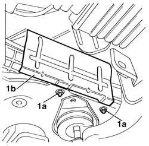
Applies to: engines: 2.5 V6; all production periods
1. Undo the upper alternator nut, raise the engine using the hydraulic jack and withdraw the retaining bolt. Then remove the alternator from its seat.
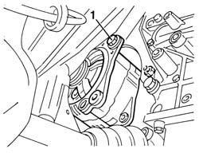
Applies to: engines: 2.5 V6; all production periods
Remove the alternator mount from the engine crankase.
Remove the alternator altogether by withdrawing it through the intermediate engine mounting.
Applies to: engines: 2.5 V6; all production periods
Refitting
RemovingRefit the alternator mount and tighten the three bolts to torque.
| Fastening | Component | Ø | Value (daNm) |
|---|---|---|---|---|
- | Bolt | ALTERNATOR SUPPORT | M8 | 2.3 - 3.3 |
Refit the alternator and rotate upwards. Secure in this position using only the upper bolt.
Refit the steering box heat shield.
1008B10 power unit front mount (timing side) flexible block - replace
1084B34 cartridge engine oil filter support - r + r
1008B20 power unit intermediate mount flexible block - replace
1072C34 r/h exhaust manifold - r + r and replace seal
1076B52 exhaust pipe (one) leaving l/h or r/h exhaust manifold - r + r
1092G10 single engine belt r r
7055B42 Additional FRONT WHEEL ARCH (one), left or right - R.R.
Topics linked from this page (21)
- 1008B10 power unit front mount (timing side) flexible block - replace
- 1008B20 power unit intermediate mount flexible block - replace
- 1072C34 r/h exhaust manifold - r + r and replace seal
- 1076B50 exhaust pipe attachment to engine - r + r
- 1076B52 exhaust pipe (one) leaving l/h or r/h exhaust manifold - r + r
- 1084B34 cartridge engine oil filter support - r + r
- 1092G10 single engine belt r r
- 4450B10 Front WHEEL (one) - R.R.
- 7055B42 Additional FRONT WHEEL ARCH (one), left or right - R.R.
- 7055B54 under-engine guard - r r
- 7055B64 Engine compartment DUST shield in front wheel arch (one), left or right - R.R.
- A1 Battery
- A10 Alternator
- A20 Starter' motor
- K40 Lambda sensor
- K81 Fuel temperature sensor
- K82 Turbocharging sensor
- K83 Fuel pressure sensor
- L30 EGR solenoid
- M15 Plug preheating control unit
- N77 Fuel pressure regulator